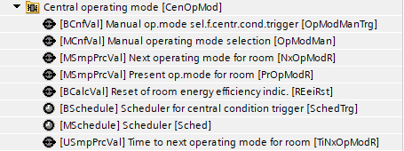
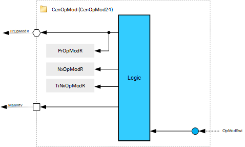
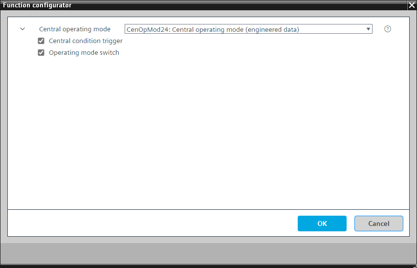

[CenOpMod24] 中央操作模式
Program block, name / node subtype: [CenOpMod24] Central operating mode
Library hierarchy: Coordination
Family: CenOpMod
项目树 | 图表 |
|---|---|
|
 |  |
Configurator


程序块存储在没有 I/Os. 的库中 使用auto-create and auto-connect函数创建 I/Os 和 /or 将它们连接到接口块，例如 R_A、CMD_B。或者，从包含库中预定义 I/Os 的文件夹中取出 I/Os，并从工厂中取出 /or，并将它们连接到接口块。
CenOpMod24 计算可由房间自动化读取的中央命令和操作模式，例如 RDG26xxKN 恒温器。命令可以源自调度器或主操作单元。
程序块中最重要的功能是：
- Central operating mode command evaluation
- Scheduler
- Manual operating mode selection
- Manual central air handler mode
- Central condition trigger
姓名 | 描述 | 类型 | 报警/通知类 | 趋势/类型 | |
|---|---|---|---|---|---|
OpModMan | Manual operating mode selection | MCnfVal: Multistate configuration value | N/A | N/A | |
PrOpModR | Present operating mode for room | MSmpPrcVal: Multistate simple process value | N/A | 是的，4 | |
Sched | Scheduler | MSchedule: Multistate scheduler | N/A | N/A | |
NxOpModR | Next operating mode for room | MSmpPrcVal: Multistate simple process value | N/A | N/A | |
TiNxOpModR | Time to next operating mode for room | USmpPrcVal: Unsigned simple process value | N/A | N/A | |
描述 |
|---|
|
Operating mode switch |
Central condition trigger 属于该选项的元素： 用于中央条件触发的手动操作模式选择器 |MCnfVal: Multistate configuration value Scheduler for central condition trigger | MSchedule: Multistate scheduler Reset of room energy efficiency indicator | BCalcVal: Binary calculated value |
Central operating mode command evaluation
中央操作模式命令来自调度程序或来自手动操作模式选择，并被写入房间的当前操作模式。
Manual central air handler mode
此外，该区域的工厂运行模式可通过手动空气处理器切换至舒适模式。为此，空气处理器中的 OpModMan 或 OpModSwi 必须连接到相应的接口（选项：Operating mode switch).
Central condition trigger
CenOpMod24 可以通过激活房间能效指示器的重置来分配中心条件触发器。